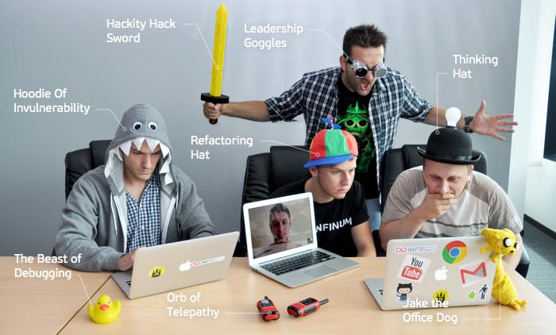

Что я ищу
В первую очередь я ищу новый опыт и знания касательно web'a. Я мог бы работать фрилансером, мог бы и дальше погружаться в сферу через youtube, однако, понимаю, что этого недостаточно. Мне нужны наставники. Мне нужен реальный опыт и общение внутри web-мастерской, коллектива, зараженного идеей формирования интернета, его улучшения.

Как я работаю
После газеты сформировалась привычка работать со множеством потоков информации и схватывать всё на лету. Легко адаптируюсь в новой обстановке. Люблю объективную критику, она делает меня лучше. Люблю учиться.
Например, моих скромных навыков использования JS, вероятно, хватит на большую часть задач типовой верстки. Но я продолжаю его углубленное изучение, поскольку бэк-энд разработка мне также интересна. Да и хороший специалист должен ориентироваться в смежных делах.
Из жизненных позиций могу отметить, пожалуй, только одну: всё состоит из мелочей, а потому к ним нужно проявлять самое пристальное внимание.